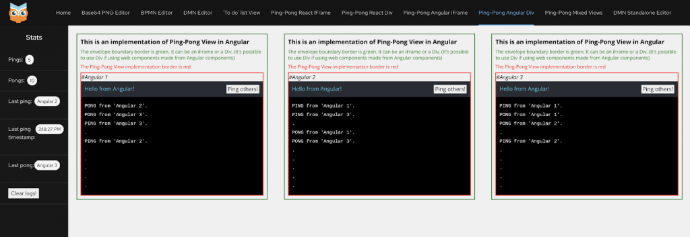
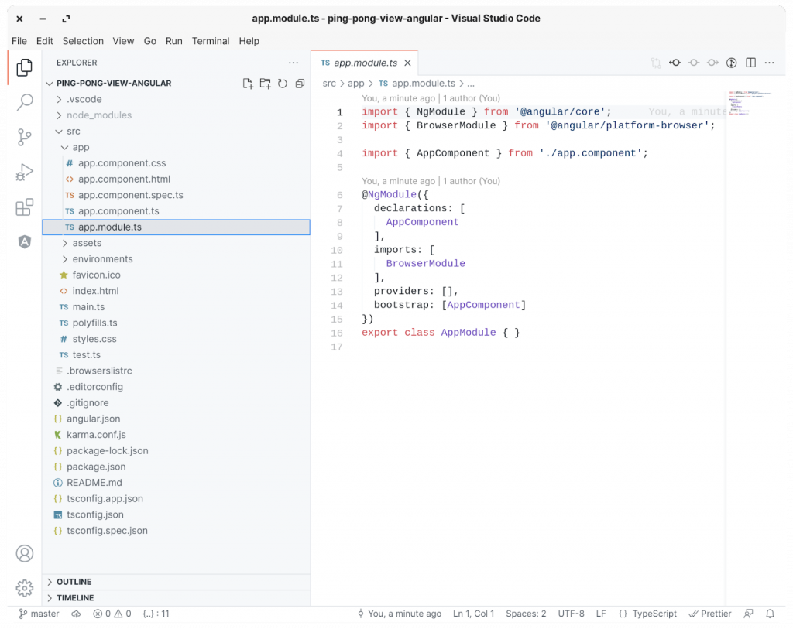
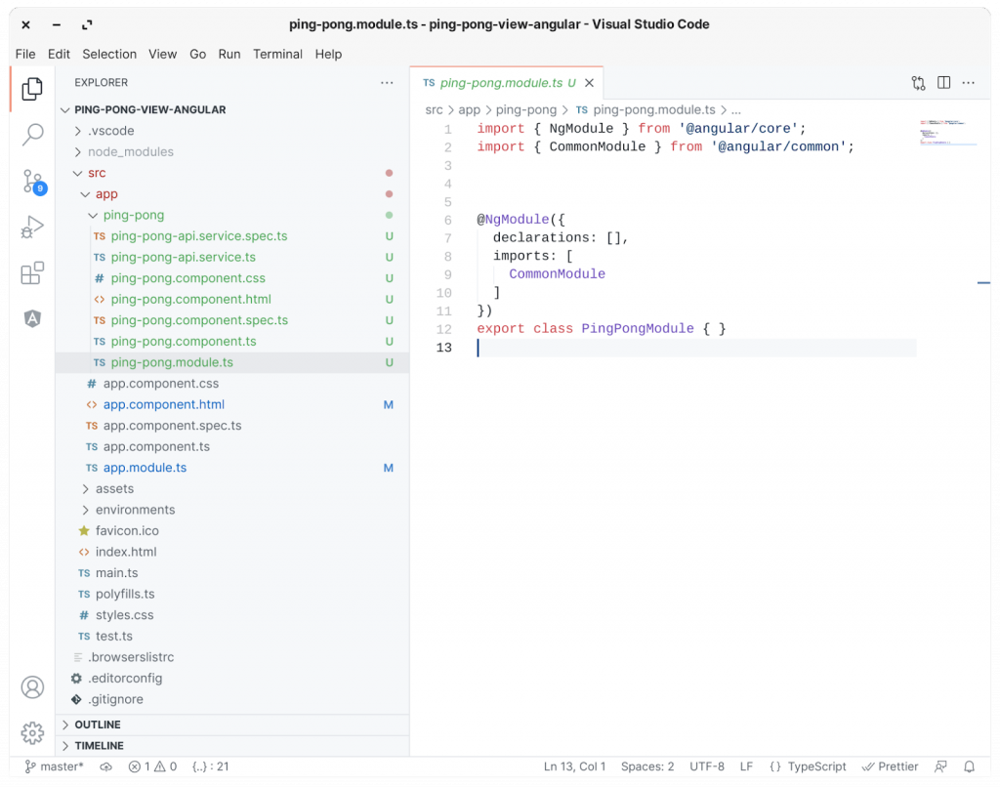
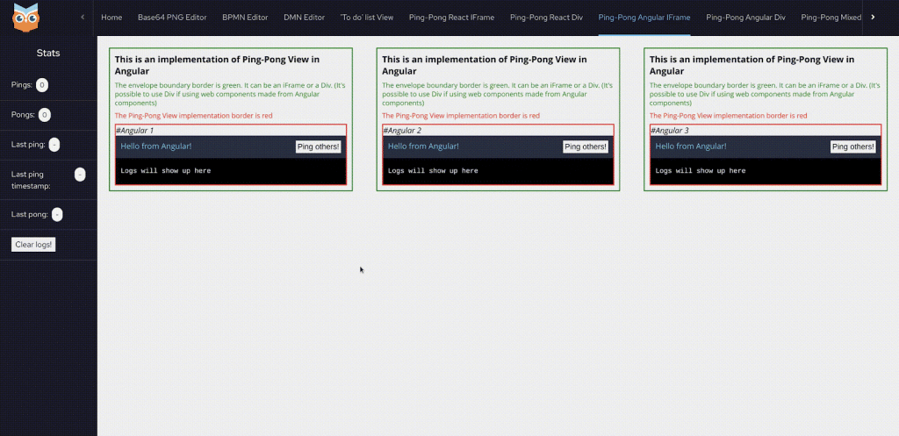

KIE Tools Examples – Implementing a Ping Pong View in Angular
Following the series of posts by Luiz Motta on how to create custom views using our Envelope API, we now expand these examples with a new view implementation, this time using Angular instead of React!
In this post I’ll show how we refactored the Ping Pong View to be more generic and agnostic concerning the frontend framework used, then we’ll build an Angular implementation of the View, which can be rendered inside an IFRAME or a DIV (using Web Components!).
Everything shown in this post was implemented in this PR kie-tools#786 to add new examples to our project and show that the Multiplying Architecture can be used with any framework.
Refactoring the Ping Pong View package
The first thing we had to do to make the Ping Pong View package agnostic to frontend frameworks was to, instead of taking full control of where and when to render an implementation, allow the implementation to render itself and initialize the API whenever it’s ready.
In the following sections, we will see how each submodule of the Ping Pong View package was changed to support this architecture.
APIs
Few changes have been made to the APIs (Channel, Envelope, and external PingPongApi). The most noticeable one was the addition of new external and envelope methods to showcase how a Channel can control and obtain data from envelope implementations.
| /** | |
| * The API of a PingPongViewApi. | |
| * | |
| * These methods are what the "external world" knows about this component. | |
| */ | |
| export interface PingPongApi { | |
| clearLogs(): void; | |
| getLastPingTimestamp(): Promise<number>; | |
| } |
| /** | |
| * Methods provided by the Envelope that can be consumed by the Channel. | |
| */ | |
| export interface PingPongEnvelopeApi { | |
| pingPongView__init(association: Association, initArgs: PingPongInitArgs): Promise<void>; | |
| pingPongView__clearLogs(): Promise<void>; | |
| pingPongView__getLastPingTimestamp(): Promise<number>; | |
| } |
Envelope
To start, no more “PingPongEnvelopeView.tsx” was needed since implementations would handle their rendering inside the provided container, so it was removed.
This was an important and necessary step because Angular doesn’t have something similar to ReactDOM.render() that can render a React component wherever it’s called (but that can be solved with Web Components, as we will see shortly).
The PingPongEnvelopeApiImpl also received some changes. The pingPongView__init() method doesn’t need to wait for the view implementation to render before calling its factory create() method anymore, since at the time it’s called the view is rendered and ready.
| export class PingPongEnvelopeApiImpl implements PingPongEnvelopeApi { | |
| constructor( | |
| private readonly args: EnvelopeApiFactoryArgs<PingPongEnvelopeApi, PingPongChannelApi, void, {}>, | |
| private readonly pingPongViewFactory: PingPongFactory | |
| ) {} | |
| pingPongApi?: () => PingPongApi | null; | |
| public async pingPongView__init(association: Association, initArgs: PingPongInitArgs) { | |
| this.args.envelopeClient.associate(association.origin, association.envelopeServerId); | |
| this.pingPongApi = this.pingPongViewFactory.create(initArgs, this.args.envelopeClient.manager.clientApi); | |
| } | |
| public async pingPongView__clearLogs() { | |
| this.pingPongApi?.()?.clearLogs(); | |
| } | |
| public async pingPongView__getLastPingTimestamp() { | |
| const api = this.pingPongApi?.(); | |
| if (!api) return Promise.resolve(0); | |
| return api.getLastPingTimestamp(); | |
| } | |
| } |
Embedded
Here are convenient React components to be used for integrating any Ping Pong View implementations. These components forward their refs, which, in this case, are the implementations of the PingPongApi, returned by the create() method from the PingPongFactory of your custom view.
In the case of iFrames, the implementation should provide an entry point URL (the “envelopePath”). For DIVs, it should provide a “renderView” method that receives the container where it should be displayed and the envelope ID to be mapped.
Once the view is rendered the envelope can be initialized via PingPongViewEnvelope.init(). One of the parameters passed should be an instance of the PingPongFactory from your implementation.
| export class PingPongApiService implements PingPongFactory { | |
| … | |
| create(initArgs: PingPongInitArgs, channelApi: MessageBusClientApi<PingPongChannelApi>) { | |
| … | |
| return () => { | |
| … | |
| } as PingPongApi; | |
| } | |
| pingPongApiService = new PingPongApiService(); | |
| // Initialize envelope with the container config, the bus, | |
| // and factory (in this case, a service that implements the "create" method). | |
| // This should be called after the view is rendered, | |
| // inside a `ngOnInit` or `useEffect` for example. | |
| PingPongViewEnvelope.init({ | |
| config: { containerType: this.containerType, envelopeId: this.envelopeId! }, | |
| bus: { postMessage: (message, _targetOrigin, transfer) => window.parent.postMessage(message, "*", transfer) }, | |
| pingPongViewFactory: this.pingPongApiService, | |
| }); |
Implementing Ping Pong View in Angular
Any Angular application, after being built, results in an index.html file that loads multiple .js files (polyfills.js, runtime.js, and main.js). This is fine when we are running the application by itself or inside an iFrame, but if we want to render it in a DIV (or any other HTML Element) Angular doesn’t provide a utility such as ReactDOM.render(). What it does provide is a simple way to create a Web Component that can be used anywhere!
So in this section, we will see how to implement a Ping Pong View in Angular and then build a Web Component from an Angular application.

The application
If you are new to Angular, the Getting Started page from the Angular documentation is great! But don’t worry, we will start from the beginning, creating an Angular application from the ground up.
First, make sure that you have angular/cli installed globally:
npm install -g @angular/cli
Now create a new Angular project with the following command:
ng new ping-pong-view-angular
(using Angular routing and any stylesheet formatting other than CSS is optional)

We can now go ahead and create our Ping Pong module with a component and service:
cd src/app ng generate module ping-pong cd ping-pong ng generate component ping-pong --flat ng generate service ping-pong-api

Great! Now, before implementing the component and service, let’s make sure that the ping-pong component is rendered correctly in our app component (which is the application entry point).
For that, edit the app.component.html file, removing everything and adding the ping-pong component:
<app-ping-pong></app-ping-pong>
Ping Pong Api Service
In Angular, services can have many uses, the most common ones being to interface with external APIs and keep a state of values used across the application.
For this project, we want to use the Channel API provided by the Envelope while keeping a local state of all pings and pongs sent and received.
A great way to do this is to make the PingPongApiService class also implement the PingPongFactory interface, passing an instance of it to the PingPongViewEnvelope init() method (to later have our PingPongApiService create() being called inside PingPongEnvelopeApiImpl.pingPongView__init() passing the necessary initial arguments and the Client API).
| import { Injectable } from "@angular/core"; | |
| import { MessageBusClientApi } from "@kie-tools-core/envelope-bus/dist/api"; | |
| import { PingPongChannelApi, PingPongInitArgs } from "@kie-tools-examples/ping-pong-view/dist/api"; | |
| import { PingPongFactory } from "@kie-tools-examples/ping-pong-view/dist/envelope"; | |
| import { ReplaySubject, BehaviorSubject, Subject } from "rxjs"; | |
| declare global { | |
| interface Window { | |
| initArgs: PingPongInitArgs; | |
| channelApi: PingPongChannelApi; | |
| } | |
| } | |
| export interface LogEntry { | |
| line: string; | |
| time: number; | |
| } | |
| function getCurrentTime() { | |
| return Date.now(); | |
| } | |
| @Injectable({ | |
| providedIn: 'root', | |
| }) | |
| export class PingPongApiService implements PingPongFactory { | |
| channelApi: MessageBusClientApi<PingPongChannelApi>; | |
| initArgs: PingPongInitArgs; | |
| log = new ReplaySubject<LogEntry>(10); | |
| logCleared = new Subject(); | |
| lastPingTimestamp = new BehaviorSubject<number>(0); | |
| dotInterval?: number; | |
| initialized = false; | |
| pingSubscription?: (source: string) => void; | |
| pongSubscription?: (source: string, replyingTo: string) => void; | |
| constructor() {} | |
| create(initArgs: PingPongInitArgs, channelApi: MessageBusClientApi<PingPongChannelApi>) { | |
| // Making sure we don't subscribe more than once. | |
| this.clearSubscriptions(); | |
| this.clearInterval(); | |
| this.initArgs = initArgs; | |
| this.channelApi = channelApi; | |
| // Subscribe to ping notifications. | |
| this.pingSubscription = this.channelApi.notifications.pingPongView__ping.subscribe((pingSource) => { | |
| // If this instance sent the PING, we ignore it. | |
| if (pingSource === this.initArgs.name) { | |
| return; | |
| } | |
| // Add a new line to our log, stating that we received a ping. | |
| this.log.next({ line: `PING from '${pingSource}'.`, time: getCurrentTime() }); | |
| // Acknowledges the PING message by sending back a PONG message. | |
| this.channelApi.notifications.pingPongView__pong.send(this.initArgs.name, pingSource); | |
| }); | |
| // Subscribe to pong notifications. | |
| this.pongSubscription = this.channelApi.notifications.pingPongView__pong.subscribe( | |
| (pongSource: string, replyingTo: string) => { | |
| // If this instance sent the PONG, or if this PONG was not meant to this instance, we ignore it. | |
| if (pongSource === this.initArgs.name || replyingTo !== this.initArgs.name) { | |
| return; | |
| } | |
| // Updates the log to show a feedback that a PONG message was observed. | |
| this.log.next({ line: `PONG from '${pongSource}'.`, time: getCurrentTime() }); | |
| } | |
| ); | |
| // Populate the log with a dot each 2 seconds. | |
| this.dotInterval = window.setInterval(() => { | |
| this.log.next({ line: ".", time: getCurrentTime() }); | |
| }, 2000); | |
| this.initialized = true; | |
| return () => ({ | |
| clearLogs: () => { | |
| this.log = new ReplaySubject<LogEntry>(10); | |
| // Emit a value to logCleared so we can re-subscribe to this.log wherever needed. | |
| this.logCleared.next(null); | |
| }, | |
| getLastPingTimestamp: () => { | |
| return Promise.resolve(this.lastPingTimestamp.value); | |
| }, | |
| }); | |
| } | |
| // Send a ping to the channel. | |
| ping() { | |
| this.channelApi.notifications.pingPongView__ping.send(this.initArgs.name); | |
| this.lastPingTimestamp.next(getCurrentTime()); | |
| } | |
| clearSubscriptions() { | |
| this.pingSubscription && this.channelApi.notifications.pingPongView__ping.unsubscribe(this.pingSubscription); | |
| this.pongSubscription && this.channelApi.notifications.pingPongView__pong.unsubscribe(this.pongSubscription); | |
| } | |
| clearInterval() { | |
| window.clearInterval(this.dotInterval); | |
| } | |
| ngOnDestroy() { | |
| this.clearSubscriptions(); | |
| this.clearInterval(); | |
| } | |
| } |
Ping Pong Component
Our component should both initialize and consume the Ping Pong Api Service, and then, display the pings and pongs logs.
| import { PingPongApiService, LogEntry } from "./ping-pong-api.service"; | |
| import { Component, Input, OnInit } from "@angular/core"; | |
| import * as PingPongViewEnvelope from "@kie-tools-examples/ping-pong-view/dist/envelope"; | |
| import { ContainerType } from "@kie-tools-core/envelope/dist/api"; | |
| import { Observable, scan } from "rxjs"; | |
| @Component({ | |
| selector: "app-ping-pong", | |
| templateUrl: "./ping-pong.component.html", | |
| styleUrls: ["./ping-pong.component.css"], | |
| providers: [], | |
| }) | |
| export class PingPongComponent implements OnInit { | |
| @Input() containerType: ContainerType = ContainerType.IFRAME; | |
| @Input() envelopeId?: string; | |
| constructor(public pingPongApiService: PingPongApiService) {} | |
| log: Observable<LogEntry[]>; | |
| subscribeToLogUpdates() { | |
| this.log = this.pingPongApiService.log.asObservable().pipe(scan((acc, curr) => […acc.slice(–9), curr], [])); | |
| } | |
| ngOnInit() { | |
| // Initialize log with a starting message. | |
| this.pingPongApiService.log.next({ line: "Logs will show up here", time: 0 }); | |
| // Initialize envelope with the container config, the bus, | |
| // and factory (in this case, a service that implements the "create" method). | |
| PingPongViewEnvelope.init({ | |
| config: { containerType: this.containerType, envelopeId: this.envelopeId! }, | |
| bus: { postMessage: (message, _targetOrigin, transfer) => window.parent.postMessage(message, "*", transfer) }, | |
| pingPongViewFactory: this.pingPongApiService, | |
| }); | |
| // Create an observable variable with the 10 latest values of the log. | |
| this.subscribeToLogUpdates(); | |
| this.pingPongApiService.logCleared.subscribe(() => this.subscribeToLogUpdates()); | |
| } | |
| } |
Notice that the component has two Input() arguments, these arguments are the equivalent of props in a React component, and they serve to receive values from a parent component. They are needed here to differentiate when the ping-pong component is being rendered in a DIV or an iFrame. By default, it’ll assume it’s in an iFrame so these inputs don’t need to be set, but later on, we will see how to set them so that the component works as a Web Component.
On init (via ngOnInit) the PingPongViewEnvelope is initialized, receiving the instance of our Ping Pong Api Service as a Ping Pong Factory, and at this point, the Channel and Envelope will start to communicate with each other.
So far, so good! But we still need to display the ping pong logs somewhere! That’s where the ping-pong.component.html template file comes in. As long as it is mapped as the template file for the component, everything publicly available in the PingPongComponent class can be used in the template, like so:
| <div class="ping-pong-view–main"> | |
| <h2>This is an implementation of Ping-Pong View in Angular</h2> | |
| <p class="ping-pong-view–p-iframe"> | |
| The envelope boundary border is green. It can be an iFrame or a Div. (It's possible to use Div if using web | |
| components made from Angular components) | |
| </p> | |
| <p class="ping-pong-view–p-ping-pong">The Ping-Pong View implementation border is red</p> | |
| <div class="ping-pong-view–container"> | |
| <i>#{{ pingPongApiService.initArgs?.name }}</i> | |
| <div class="ping-pong-view–header"> | |
| <span>Hello from Angular!</span> | |
| <button (click)="pingPongApiService.ping()">Ping others!</button> | |
| </div> | |
| <div class="ping-pong-view–log"> | |
| <p *ngFor="let entry of log | async" class="ping-pong-view–line"> | |
| {{ entry.line }} | |
| </p> | |
| </div> | |
| </div> | |
| </div> |
Ping Pong Module
Lastly, we can edit our ping-pong.module.ts file with everything we’ve just created:
| import { PingPongApiService } from "./ping-pong-api.service"; | |
| import { NgModule } from "@angular/core"; | |
| import { BrowserModule } from "@angular/platform-browser"; | |
| import { PingPongComponent } from "./ping-pong.component"; | |
| @NgModule({ | |
| declarations: [PingPongComponent], | |
| imports: [BrowserModule], | |
| exports: [PingPongComponent], | |
| providers: [PingPongApiService], | |
| bootstrap: [PingPongComponent], | |
| }) | |
| export class PingPongModule {} |
And that’s it! We now have an Angular application running a Ping Pong View implementation!

But how can it run in a DIV?
Building a Web Component from an Angular app
When Angular 6 was released, along with it, was released a new utility package: angular/elements. It provides everything needed to build Web Components from Angular applications. You can read more about it here!
This new tool now comes in handy for us, since our application so far is just a simple component and service. In the next steps, we will learn how to create a Web Component from an Angular module.
Web Component Module
First, let’s create a new module with the following command at the root of our project:
ng generate module web-component
Then create a component in the web-component directory:
cd src/app/web-component ng generate component web-component --flat
Wrapper component
The web-component.component.ts file should only be a wrapper for the Ping Pong component, passing the containerType and envelopeId inputs.
| import { Component, Input } from "@angular/core"; | |
| import { ContainerType } from "@kie-tools-core/envelope/dist/api"; | |
| @Component({ | |
| selector: "ping-pong-wc", | |
| template: `<app-ping-pong [containerType]="containerType" [envelopeId]="envelopeId"></app-ping-pong>`, | |
| }) | |
| export class PingPongWcComponent { | |
| @Input("containertype") containerType: ContainerType; | |
| @Input("envelopeid") envelopeId: string; | |
| } |
Module
In the web-component.module.ts file is where the magic happens! That’s where we will take advantage of angular/elements to create a custom element (a.k.a Web Component).
It should look something like this:
| import { NgModule, Injector, DoBootstrap } from "@angular/core"; | |
| import { BrowserModule } from "@angular/platform-browser"; | |
| import { createCustomElement } from "@angular/elements"; | |
| import { PingPongModule } from "../ping-pong/ping-pong.module"; | |
| import { PingPongWcComponent } from "./web-component.component"; | |
| @NgModule({ | |
| declarations: [PingPongWcComponent], | |
| imports: [BrowserModule, PingPongModule], | |
| entryComponents: [PingPongWcComponent], | |
| providers: [], | |
| }) | |
| export class WebComponentModule implements DoBootstrap { | |
| constructor(private injector: Injector) {} | |
| ngDoBootstrap() { | |
| const element = createCustomElement(PingPongWcComponent, { injector: this.injector }); | |
| customElements.define("ping-pong-angular", element); | |
| } | |
| } |
The web-component build
Angular allows us to have multiple builds in the same project, this makes it possible to build multiple applications, packages, and libraries from a singular Angular project. This is great news for us because we want to build an Angular application to render in an iFrame, but we also want to build a Web Component, using the same components and services!
Whenever we bootstrap a new Angular project a main.ts file is automatically generated, this is the application entry point, basically where the main module should be loaded to a web page (the App module by default).
For our web component, we need a new and different main file, so that it can be the entry point for the component.
In the same folder of the web component module, create a file named web-component.main.ts with the following content:
| import { WebComponentModule } from "./web-component.module"; | |
| import { platformBrowserDynamic } from "@angular/platform-browser-dynamic"; | |
| const bootstrap = () => platformBrowserDynamic().bootstrapModule(WebComponentModule); | |
| bootstrap().catch((err) => console.error(err)); |
It’s almost identical to the main.ts created by Angular, but it loads the WebComponentModule instead of the AppModule.
But it’s not over yet, we need to declare this new project so that angular/cli can figure out how to build it. This is where we edit the angular.json file, adding a new “project” to it, alongside the ping-pong-view-angular one. Let’s call it “ping-pong-view-wc”:
| { | |
| "$schema": "./node_modules/@angular/cli/lib/config/schema.json", | |
| "version": 1, | |
| "newProjectRoot": "projects", | |
| "cli": { | |
| "packageManager": "yarn" | |
| }, | |
| "projects": { | |
| "ping-pong-view-angular": { | |
| … | |
| }, | |
| "ping-pong-view-wc": { | |
| "projectType": "application", | |
| "root": "", | |
| "sourceRoot": "src", | |
| "architect": { | |
| "build": { | |
| "builder": "@angular-devkit/build-angular:browser", | |
| "options": { | |
| "outputPath": "dist/wc", | |
| "index": "src/index.html", | |
| "main": "src/app/web-component/web-component.main.ts", | |
| "polyfills": "src/polyfills.ts", | |
| "tsConfig": "tsconfig.wc.json", | |
| "aot": true, | |
| "assets": ["src/favicon.ico", "src/assets"], | |
| "styles": ["src/styles.css"], | |
| "scripts": [] | |
| }, | |
| "configurations": { | |
| "production": { | |
| "fileReplacements": [ | |
| { | |
| "replace": "src/environments/environment.ts", | |
| "with": "src/environments/environment.prod.ts" | |
| } | |
| ], | |
| "optimization": true, | |
| "outputHashing": "none", | |
| "sourceMap": false, | |
| "namedChunks": false, | |
| "extractLicenses": true, | |
| "vendorChunk": false, | |
| "buildOptimizer": true, | |
| "budgets": [ | |
| { | |
| "type": "initial", | |
| "maximumWarning": "500kb", | |
| "maximumError": "1mb" | |
| }, | |
| { | |
| "type": "anyComponentStyle", | |
| "maximumWarning": "2kb", | |
| "maximumError": "4kb" | |
| } | |
| ] | |
| } | |
| } | |
| } | |
| } | |
| } | |
| }, | |
| "defaultProject": "ping-pong-view-angular" | |
| } |
It’s important to create a new tsconfig file specifically for this new build so that the correct files are included and the build is output to a new directory:
| { | |
| "extends": "./tsconfig.json", | |
| "compilerOptions": { | |
| "outDir": "./dist/wc", | |
| "types": [] | |
| }, | |
| "files": ["src/app/web-component/web-component.main.ts", "src/polyfills.ts"], | |
| "include": ["src/app/web-component/*.d.ts"] | |
| } |
Build scripts
Finally is time to build our Web Component, and for that new scripts can be added to your package.json:
"scripts": {
...
"build:wc": "ng build ping-pong-view-wc && yarn run build:wc:concat",
"build:wc:concat": "cat dist/wc/polyfills.js dist/wc/runtime.js dist/wc/main.js > dist/wc/index.js",
...
}
The “build:wc:concat” command is useful to generate a single file to be loaded wherever this web-component is used, making it simple to use, instead of loading all 3 files every time.
That’s it, we’re finally done, right? Well, not quite…
Multiple ping-pong-view web components on the same page
What would happen if we loaded multiple ping-pong-view web components on the same page? In theory, everything should be fine, because all web components should be self-contained. And they are! But Angular services, by default, are singletons, and without any changes, every ping-pong web component will be using the same instance of the PingPongApiService.
Thankfully, Angular provides an easy way to fix that!
Remember our ping-pong-api.service.ts? It declares an Angular service that implements the PingPongFactory interface, but by default, Angular makes it an Injectable service that is provided in the “root” of our project, like this:
@Injectable({
providedIn: 'root',
})
export class PingPongApiService implements PingPongFactory { ...
Well, to make it not behave as a singleton, we just need to remove the “providedIn” property:
@Injectable()
export class PingPongApiService implements PingPongFactory { ...
And, so that our component can still inject the service as its dependency, we need to set it as a provider. In the ping-pong.component.ts file add PingPongApiService as a Provider like this:
@Component({
selector: "app-ping-pong",
templateUrl: "./ping-pong.component.html",
styleUrls: ["./ping-pong.component.css"],
providers: [PingPongApiService],
})
export class PingPongComponent implements OnInit { ...
And now we are finally done!
As long as you load the built index.js file as a script wherever you want (even inside a React component) you can load the web component by its name:
<ping-pong-angular containerType="div" envelopeId="..."></ping-pong-angular>
Congrats on building your Angular application implementing a Ping Pong View!
If you have any questions feel free to post in the comments section below.
Also, check out the original implementation in our project, along with the one made entirely in React!
Ping Pong View implemented in React
Ping Pong View implemented in Angular